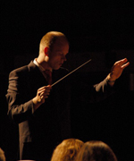

Studenten Harmonie Orkest Twente
Studenten Harmonie Orkest Twente is opgericht in 1991 en is verbonden aan de Universiteit van Twente in Enschede. Gemiddeld bestaat het orkest uit 55 muzikanten afkomstig van de universiteit en omliggende hogescholen. Tijdens het relatief korte bestaan van het orkest, heeft SHOT een traditie opgebouwd om ieder jaar een tweetal concerten op en rond de universiteit te geven. Naast deze optredens heeft SHOT regelmatig op andere locaties in het land optredens gegeven en het is een traditie om eens in de twee jaar op concertreis te gaan. Het repertoire van het orkest wisselt per concert en bestaat uit een combinatie van gerenommeerde werken voor harmonieorkest, als Danse Funambulesque (Jules Strens) en Sinfonia "Il Fiume" (Jurriaan Andriessen), en moderne originele blaasmuziek als Godspeed (Stephen Melillo), Jeanne d'Arc (Alex Poelman) en Les Voyages de Gulliver (Maxime Aulio).
Sinds 1993 staat het orkest onder leiding van Ronny Buurink. Ronny Buurink studeerde klarinet aan het Conservatorium in Enschede en vervolgde zijn studie aan het Sweelinck Conservatorium te Amsterdam bij Piet Honingh, soloklarinettist van het Koninklijk Concertgebouw Orkest. Naast het Studenten Harmonie Orkest Twente dirigeert hij het harmonieorkest van muziekvereniging Euphonia uit Eibergen. Ook is hij als soloklarinettist en tweede dirigent actief binnen het Groot Harmonieorkest van Muziekvereniging Wilhelmina Glanerbrug. In 1994 werd met goed resultaat zijn studie HaFaBra-directie eerste fase afgesloten. In 2001 heeft Ronny zijn studie HaFaBra-directie een vervolg gegeven aan de Messiaen Academie in Enschede, waar hij in 2004 bij hoofdvakdocent Hennie Ramaekers de studie HaFaBra-directie tweede fase met goed gevolg heeft afgerond.